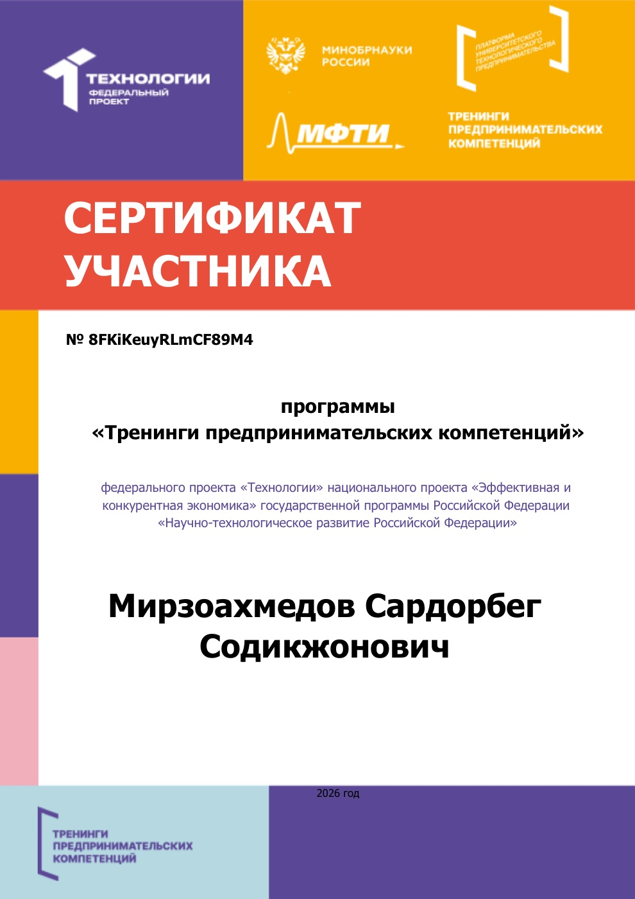

Практика выполнялась индивидуально. На странице описан вклад автора в проект «Филин» по дисциплине «Проектная деятельность».
Исследователь и аналитик
Группа 251-338
Куратор: Гендон А.Л.
Факультет информационных технологий
В проектной команде «Филина» Сардорбег занимался исследованием целевой аудитории: выяснял, как студенты сейчас ищут преподавателей, что их не устраивает и за что они готовы платить. Результаты опроса легли в основу требований к сервису и весов алгоритма подбора.
В рамках проектной практики он также сделал прототип подбора и этот сайт, вёл репозиторий и участвовал в программе предпринимательских тренингов STARTUP HUB.
Всего 72 академических часа.
Сертификат участника программы «Тренинги предпринимательских компетенций» федерального проекта «Технологии» (МФТИ, Платформа университетского технологического предпринимательства), полученный по итогам STARTUP HUB.
